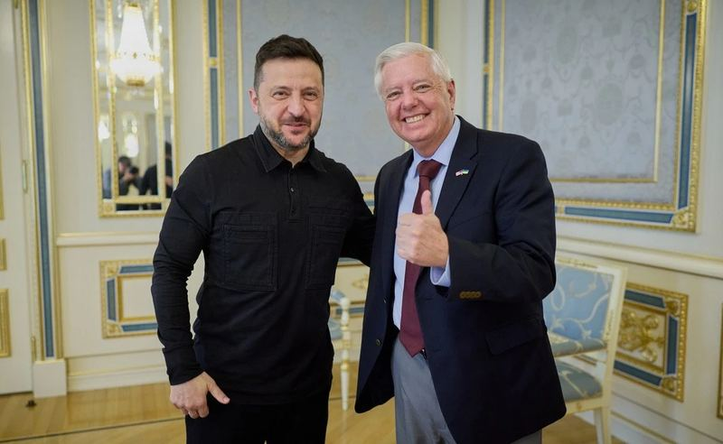

⚡Ukraine hụt hẫng vì mất chỗ dựa quan trọng ngay cạnh Tổng thống Mỹ Trump
Thượng nghị sĩ Lindsey Graham thăm Kiev chỉ hai ngày trước khi qua đời. (Ảnh: AP) Chỉ hai ngày trước khi qua đời, ông Graham có mặt tại Quảng trường Thánh Michael ở thủ đô Kiev, đứng trước những mái vòm dát vàng của tu v